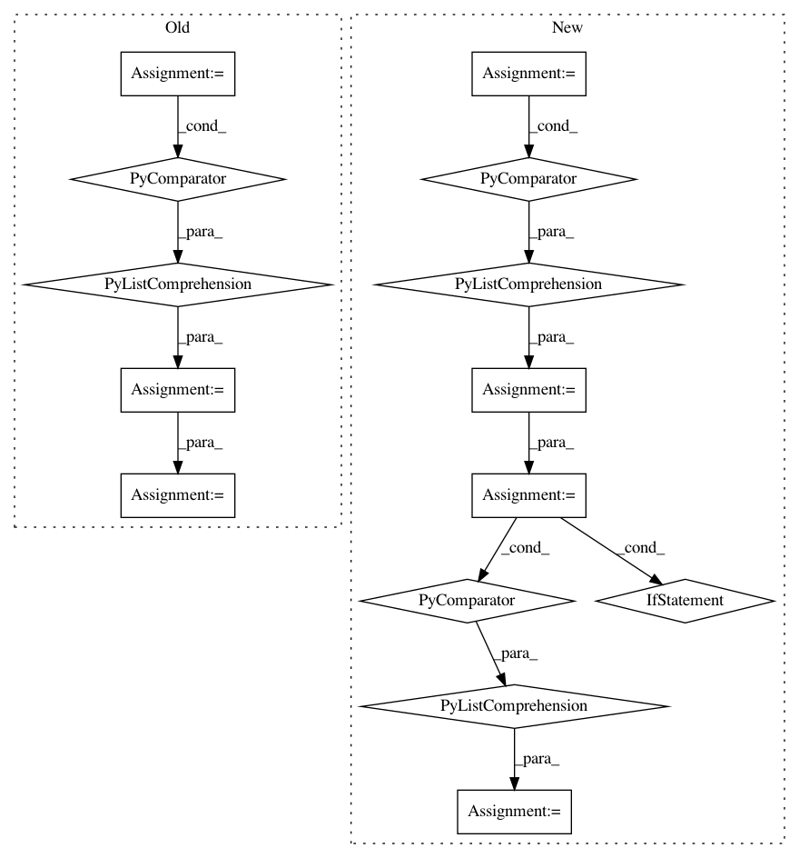

054095d922edda5134e520522bc82a1b95cc5bd4,onnx_tf/backend_rep.py,TensorflowRep,run,#TensorflowRep#Any#,52
Before Change
}
sess.run(tf.compat.v1.global_variables_initializer())
outputs = [self.tensor_dict[output] for output in self.outputs]
output_values = sess.run(outputs, feed_dict=feed_dict)
return namedtupledict("Outputs", self.outputs)(*output_values)
def export_graph(self, path):
Export backend representation to a Tensorflow proto file.
After Change
// single input
feed_dict = dict([(self.inputs[0], inputs)])
input_dict = dict(
[(x[0], tf.constant(x[1])) for x in feed_dict.items()])
output_values = self.tf_module(**input_dict)
output_values = [val.numpy() if isinstance(val, tf.Tensor) else val for val in output_values]
return namedtupledict("Outputs", self.outputs)(*output_values)
def export_graph(self, path):
In pattern: SUPERPATTERN
Frequency: 3
Non-data size: 14
Instances
Project Name: onnx/onnx-tensorflow
Commit Name: 054095d922edda5134e520522bc82a1b95cc5bd4
Time: 2020-09-09
Author: smonov@gmail.com
File Name: onnx_tf/backend_rep.py
Class Name: TensorflowRep
Method Name: run
Project Name: stellargraph/stellargraph
Commit Name: b52e083827ce7aefda75c4370db0ad6942e27dae
Time: 2018-08-12
Author: docherty@gmail.com
File Name: stellar/mapper/node_mappers.py
Class Name: HinSAGENodeMapper
Method Name: __getitem__
Project Name: ChrisCummins/clgen
Commit Name: 29bf958785d87f57893f0f07f307d2e35805b8e3
Time: 2018-06-05
Author: chrisc.101@gmail.com
File Name: deeplearning/clgen/models/tensorflow_backend.py
Class Name: TensorFlowModel
Method Name: GetParamsPath